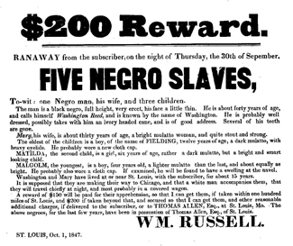
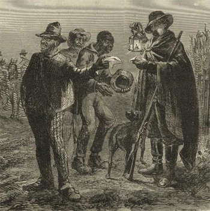
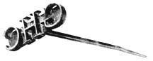
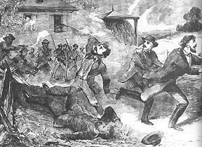
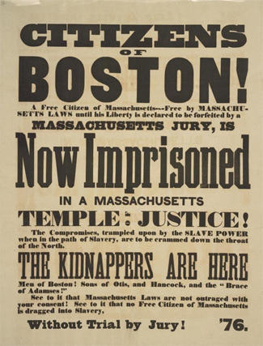
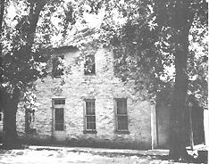
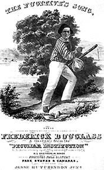

|
Fugitive slaves were slaves who ran away to escape from bondage altogether. They
are not to be confused with the many short-term runaways who plagued every
slaveholder. Temporary runaways usually had good reason to leave their homes.
They fled to avoid punishment, sometimes to return to a former, less cruel
owner; to avoid heavy work assignments; to join their spouses or other family
members; or simply to take a break from their monotonous routine. Slaves who
acquired reputations as habitual runaways lowered their value on the market. At
times, such short-term escapes constituted a control mechanism similar to work
stoppages in the free labor market place.
|

A poster advertising a reward for the return of runaway slaves
|
Fugitive slaves, in contrast, posed a much more serious threat to the slave
system. Their destination was usually the Northern states or Canada, though some
fled to Mexico and others joined colonies of former slaves hiding out in the
Southern swamps or mountains. Others found refuge among the Seminoles and other
Indian peoples. Their objective was freedom from bondage. At the time that
apologists for slavery were arguing that slaves had no desire for freedom, and
that blacks were especially adapted to slavery, evidence to the contrary
accumulated. Those few travelers in the Southern states who had an opportunity
to speak with slaves and gain their confidence found them to be obsessed with
the idea of someday living in freedom. The narratives or autobiographies written
by former slaves underscore the same point. Slaves understood the meaning of
freedom. They observed the way whites and some blacks lived outside slavery, and
could not understand why they were forced to live in servitude. The slaves'
religious observances, secular songs, spirituals, and much of their oral folk
literature, all were obsessed with achieving freedom--if not in this life, then
in the next. Yet relatively few slaves--perhaps a few thousand a year--decided to
make the break from bondage.
|

A slave patrol checks slaves' passes in this
engraving from 1839.
|
Masters fantasized that their slaves were happy and therefore had little
cause to run away. But the answer for the paucity of runaways lies elsewhere. A
major deterrent was the odds against success. Masters were determined that those
who escaped must be caught and punished, even though an escaped slave was a
constant source of trouble and discontent in the slave labor force. White
Southerners assumed that slave discontent resulted from abolition agitation from
the North. Masters looked upon slave escapes as personal insults, and runaway
bondsmen as ingrates. When captured, fugitive slaves were most often sold to the
Deep South or Southwest, sometimes under false pretenses. When slaves escaped
for any lengthy period of time, their owners advertised in newspapers, hired
slave catchers to bring them back, and, occasionally, took the time and trouble
to pursue them personally. One master, Edward Gorsuch, was killed at Christiana,
Pennsylvania, in 1851 when he tried to remove several fugitives from a building
where they were hiding. Gorsuch's presence resulted in a large gathering of
supporters of the fugitives. Someone fired several shots, killing Gorsuch and
wounding his son. The incident, known as the Christiana Riot, led to a number of
treason trials in which all the defendants were acquitted. The fugitive slaves
ultimately reached Canada.
In addition to information useful to those pursuing fugitives, newspaper
advertisements of slave runaways revealed much about slavery itself.
Advertisements exposed the double personalities that some slaves assumed, such
as pretending to be unusually stupid while at the same time devising schemes to
gain more privileges or to escape. Advertisements also provided data for those
who rejected the concept of the peculiar institution as a benevolent system.
|

One way in which owners tried to keep slaves from running
away was by branding them. This branding iron was used for that purpose on a
Georgia plantation.
|
Planters occasionally asked that a slave be captured dead or alive. The
fugitives described had missing teeth, wounds from being shot, brandings, scars
from whippings, cropped ears, iron collars and leg chains, and other evidence of
cruel treatment. These, along with other material from Southern newspapers, were
included in Theodore Dwight Weld's book, Slavery As It Is (1839), an
indictment of the institution by those who knew it firsthand.
Some planters owned "nigger hounds" to track down runaway slaves. These
vicious animals were trained to locate and then maul their prey. Runaways often
carried pepper or other substances to throw bloodhounds off the scent. Most
masters, however, commissioned a professional slave catcher (some of whom were
not above kidnapping free blacks) to reclaim their bondsmen. Slave catchers also
employed trained dogs.
Another deterrent to slave escapes was the slaves' lack of information about
distance, geography, the weather, and conditions in the Northern states. Masters
deliberately spread stories about bitter cold winters, the great distances from
the South to Canada, and the alleged brutality of abolitionists. Accurate
knowledge of geography was especially hard to come by. Masters also threatened
slaves and promised severe punishment to any bondsman who contemplated escape.
Captured fugitives were lashed without mercy, brutalized by overseers who
specialized in breaking the spirit of rebellious blacks, or sold to distant
points far away from friends and relatives. Every slave who succeeded in
reaching freedom undermined the security of the whole system and provided an
example which even the most benevolent owner could not tolerate.
|

Often, slave catchers faced hostile conditions when searching
for runaway slaves in the North. This picture depicts an incident in which slave
catchers were driven out of a town with gunfire.
|
Given the odds against their success, it is no wonder that the majority of
fugitives were young men from the border states. What is amazing is that some
couples and even groups as large as fifty managed to escape. These determined
and courageous bondsmen came from every possible station within slavery. Very
often it was the most privileged slaves who escaped. Their "privileged"
conditions produced higher expectations in them, including the possibility of
freedom. And there were successful escapes from the Deep South. One slave walked
from Louisiana to New England. Another fugitive took a year to travel from
Alabama to Ohio.
Canada offered the safest northern haven, but for those who headed south,
Mexico, too, promised a land without slavery. Those escapees who chose to settle
in the nominally free Northern states encountered a multitude of discriminatory
practices and laws. They also faced the very real possibility of being returned
to slavery either by being kidnapped or by the legal procedure under the
Fugitive Slave Act of 1793 or by the even more severe Fugitive Slave Act of
1850.
Fugitive slaves tended to be self-reliant individuals who planned and carried
out their own escapes. Sometimes several attempts were required before they
achieved their objective. A St. Louis slave, William Wells Brown, for example,
thought long and hard about various escape methods and made one abortive flight
before his successful bid for freedom in 1834. He seized the opportunity to run
when the steamer on which he worked reached an Ohio port. Like many bondsmen,
Brown preferred to rely on his own resources rather than on the help of others.
He later wrote, "Supposing every person to be my enemy, I was afraid to appeal
to anyone, even for a little food, to keep body and soul together." Brown
existed on corn taken from cribs and turnips and other vegetables growing in
roadside fields. He slept in barns along the way. Eventually, even Brown found
it necessary to ask for directions, and he was fortunate to meet a sympathetic
Quaker who provided clothes, shoes, and two weeks lodging. Brown's journey
finally brought him his hard-earned freedom. He went on to become an important
lecturer in the antislavery movement and in 1853 published a novel,
Clotel, about the slave daughter of an American president. He also wrote
his autobiography, several books on European travel, and an early history of the
black people.
|

This poster protests the capture of runaway slave Anthony
Burns. Burns' case became a focal point for tensions over the Fugitive Slave Act
of 1850.
|
Other slaves also took off on their own, resting by day and traveling by the
North Star at night. To avoid being recognized from advertised descriptions,
fugitive slaves frequently resorted to disguises. One of the most ingenious
escape plans was that of Ellen and William Craft, who escaped from Georgia in
1848. William, a skilled slave cabinet maker, saved up money for their escape
from extra work. Ellen, the daughter of her master, was nearly white. In the
Crafts' escape she played the part of a deaf and ailing master. Her disguise
included wearing dark glasses and a muffler on her face and carrying her arm in
a sling. William acted as her faithful servant. They traveled north by train and
steamboat. Except for one incident in Baltimore, the Crafts had no trouble with
their plans. They settled first in Boston, but were forced to flee to Nova
Scotia when two agents of their Georgia masters appeared in Boston. The Crafts
ultimately moved to England, where they recorded their daring escape in a
pamphlet, Running a Thousand Miles for Freedom (1860).
Steamboats running from Southern ports often carried fugitives who either
passed as white passengers, stowed away, or became clandestine passengers. Many
paid the steamboat captains with money they had earned or stolen. Other
fugitives carried borrowed passes, free papers given them or forged for them by
a free black, or an American sailor's protection papers. Group escapes by ship
were very risky, as Captain Edward Sayres of the Pearl discovered in 1848
when he agreed to transport seventy-seven slaves from Washington, D.C., for a
hundred dollars a slave. When the small craft was apprehended, both Daniel
Drayton, who had planned the escape, and Captain Sayres spent nearly four and a
half years in prison before they were pardoned by President Millard Fillmore.
Jonathan Walker, another sea captain, was apprehended while attempting to
transport slaves in 1844 off the Florida coast. Walker was imprisoned and
branded on his hand with the letters "S.S." for "slave stealer."
The escape plan devised by Henry Brown necessarily involved the cooperation
of another person. Brown, who worked in a Richmond, Virginia, tobacco factory,
long had pondered escaping from slavery. One day in 1849, as he prayed, Brown
heard a voice say, "Go get a box, and put yourself in it." He had a carpenter
construct the largest shipping crate that could be transported and had himself
shipped to Philadelphia. After a twenty-six-hour trip Brown arrived safely at
the office of the Philadelphia Anti-Slavery Society whose officers had been
warned of his imminent arrival. As Henry "Box" Brown, the fugitive gained
immediate fame, reaching many audiences with the story of his life and escape. A
number of other slaves also escaped in boxes, though Brown's accomplice, who
shipped him from Richmond, later was arrested and convicted when he tried to
repeat the ruse.
Henry Bibb's escape from slavery involved a variety of tactics. Bibb first
contemplated escape in the 1830s and made six unsuccessful attempts. In 1842,
following one of his failed bids for freedom, he was sold to speculators who
agreed to give him part of the sale money and directions for getting to Canada
if he would cooperate in getting himself sold for a high price. When Bibb
completed his part of the bargain, the original owners gave him some of the
purchase money and directions as promised. Traveling on a stolen horse, and
posing as a free black, Bibb used his own purchase money to stay at first-class
hotels along the way. Commenting on his escape, Bibb explained: "No man ever
asked me whether I was bond or free ... but I always presented a bold front and
showed the best side out, which was all the pass I had." Bibb finally arrived at
Detroit without difficulty. After 1850 Bibb lived in Canada, publishing an
antislavery, emigrationist newspaper, the Voice of the Fugitive.
|

The house of Levi Coffin, a Quaker. It was a major stop on
the Underground Railroad.
|
Although the fleeing slaves generally had to rely on their own resources,
assistance sometimes was available in the Southern states. Mostly, fugitives
could depend on other slaves or free blacks for food, supplies, and shelter
while they were making their way north. Some whites, including a few planters,
took pity on the escapees and assisted the runaways in their quest for freedom.
These whites believed that in order for a slave to run away the bondsman must
have been abused by his owner. Other whites provided aid for a fee. The more
fortunate of the fugitives who reached the free states received help from
antislavery activists or the various vigilance committees of the legendary
underground railroad. While some fugitives settled in the North, more went on to
Canada where they were joined by others who were threatened by the Fugitive
Slave Act of 1850. Several Northern states passed laws discouraging the settling
of blacks within their borders, forbidding blacks to vote or hold office, and
providing for segregated schools and other kinds of public facilities. In Canada
the refugees encountered no legal discrimination, but where they settled in
large numbers the blacks suffered from discrimination and harassment by private
citizens.
While virtually all of the slaves who made their way to freedom sympathized
with the abolition movement, only a few became active participants. Some were
simply exhibited at antislavery gatherings. Others became speakers. Frederick
Douglass began his renowned speaking career in 1841 by addressing an
abolitionist gathering with his satirical version of a slaveholder's sermon
based on the text "Servants, obey in all things your master." William Wells
Brown read antislavery dramas to numerous Northern audiences; Bibb gave dramatic
readings of his personal narrative for several nights in a city, always leaving
his audience guessing as to how he would escape from the latest difficulty.
Anthony Burns, Josiah Henson, Lewis and Milton Clarke, Samuel Ringgold Ward, and
Henry "Box" Brown also provided valuable services to the antislavery cause.
While these fugitives from slavery often differed with their white co-workers in
the antislavery cause over tactics, they nevertheless added an important
element, authenticity. The escaped slaves also insisted on civil rights for
blacks in the North. Whites frequently came to hear a fugitive slave out of
curiosity and often went away convinced that slavery was indeed far worse than
they had imagined. The eyewitness accounts of these former slaves had more
impact in the antislavery cause than hundreds of theoretical speeches and
pamphlets.
|

This poster features Frederick Douglass. It reminds people
that even the well-known and distinguished Douglass was a slave that had to
steal his freedom.
|
While it was impressive to hear a former slave's personal account, the next
best thing was to read about it. Abolitionists published slave narratives both
in newspapers and in inexpensive pamphlet form. These ex-slave narratives found
a receptive audience and circulated in large numbers. By 1849 William Wells
Brown's narrative had sold 8,000 copies, and two years after its publication in
1853 Solomon Northup's narrative had sold 27,000 copies. Douglass's 1845
Narrative of the Life of Frederick Douglass, published in several
editions, has become a classic of American literature. Because most slaves were
kept illiterate by their masters, the narratives were usually recorded by a
white abolitionist. Some of the best-known slave autobiographies, however, were
generally written wholly by their authors, including those of Douglass, William
Wells Brown, Bibb, and Ward.
Former slaves made many significant contributions to American life. As
speakers and writers they revealed the horror of slavery. Their personal
accounts underscored slavery's brutalities for thousands who otherwise would
have been ignorant of the peculiar institution. Their speaking and writing
ability and their bearing gave the lie to the concept of black inferiority.
Their demand for full civil rights answered those who proposed colonizing blacks
outside the United States. And their insistence on being independent in their
views, even when these opinions clashed with those of their white co-workers,
further testified to blacks' demand for full equality in a land that boasted of
its freedom. In short, the fugitive slaves were a remarkable lot, one that
earned an important niche in American history.
Source: Randall M. Miller and John David Smith, eds. Dictionary of
Afro-American Slavery (Westport, CT: Praeger, 1997), 276-81.
|